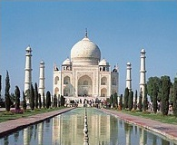

Hindistan, Agra’daki Taç Mahal birçok insan tarafından dünyadaki en güzel yapı olarak olarak görülür. Beyaz mermer mozole, on dördüncü çocuğunu doğururken ölen, Babür hükümdarı Şah Cihan’ın eşi Mümtaz Mahal’ın mezarına ev sahipliği yapması için 1631 ile 1648 yılları arasında inşa edildi.

Bu kompleks, beş kısımdan oluşur: Resmî bir giriş kapısı, bir bahçe, mozolenin kendisi, batı tarafında bir cami ve simetri olması açısından dikilen doğu tarafında bir toplantı odası. Uzun yansıtmalı havuz, alanı ortadan ikiye böler ve giriş kapısında ideal bir görüş açısından türbeyi yansıtır.
Taç Mahal’in yapımından sorumlu mimarın kimliği, tam olarak belli değildir. Bazıları, tasarımı Babür sarayında çalışan bir İtalyan olan Geronimo Veroneo’ya atfeder. Daha ikna edici bir tahmin, öğrencisi Üstat Ahmet’e yapının detay işlerini verdiği açıkça bilinen İranlı mimar Üstat İsa Han Efendi’yi işaret eder. Tasarım için model, Sultan Hasan’ın Kahire’deki mozolesidir.
Kompleksin inşası, yetmiş yıldan daha fazla zaman aldı ve 20.000 işçi çalıştırıldı. Türbe, söylendiğine göre, o zamanların parası ile altının fiyatı tola (11.66 gram) başına on beş rupi iken, otuz milyon rupiye mal oldu. Kıymetli ve yarı-kıymetli taşların yirmi sekiz çeşidini içeren madenler Asya’nın dört bir yanından getirtildi. Beyaz mermer Racastan’daki Makrana’da bulunan taş ocaklarında çıkartıldı.
Türbe, 100 metre karelik beyaz mermer bir kaide üzerinde yatar. Tüm binanın (minareler hariç) uzunluğu, genişliğine eştir. Kubbesi 44.4 metre yükselir ve cepheleri ile tamamıyla aynı boydadır. İkinci bir küçük kubbe, dışarıdaki kubbenin balonunun içine yerleştirilmiştir. Tek asimetrik unsur, Şah Cihan’ın, eşininkinin yanında yer alan türbesidir. Ana girişte taşın içine oyulmuş olarak “Cennet bahçelerine” girmek için “kalben arınmış olmaya” davet eden Kur’an alıntıları vardır.
Efsaneye göre Şah Cihan –yaşlılık günlerini oğlu tarafından tutulduğu hapishanede geçirdi– nehrin diğer tarafında kendisi için siyah mermerden ikinci bir türbe yaptırmayı planlamıştı.
Zaman, yapı üzerinde yıpratıcı etkisini göstermiştir. Bir ara Hindistan’daki İngiliz Valisi Lord William Bentick, kıymetli taşları nedeniyle onu satmayı teklif etti. 1983’te UNESCO’nun Dünya Mirası Listesi’ne alındı.
EK BİLGİLER:
1. Hint yazar Rabinadrinath Tagore, Taç Mahal’i “sonsuzluğun yüzündeki gözyaşı damlası” olarak tarif etti.
2. Taç Mahal ismi, “doruktaki yer” anlamına gelir.